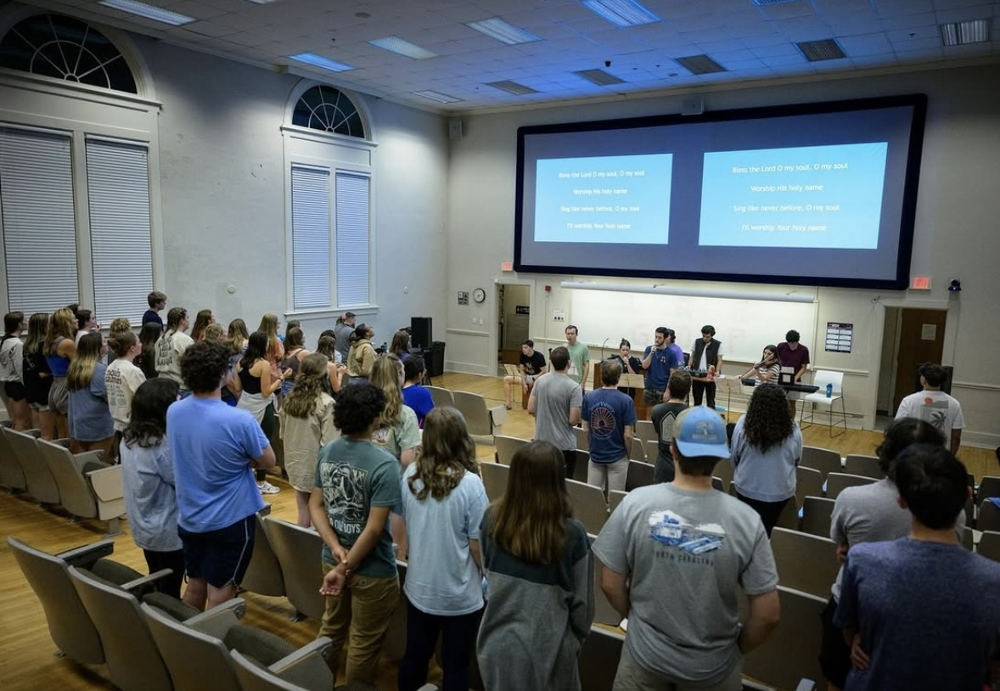
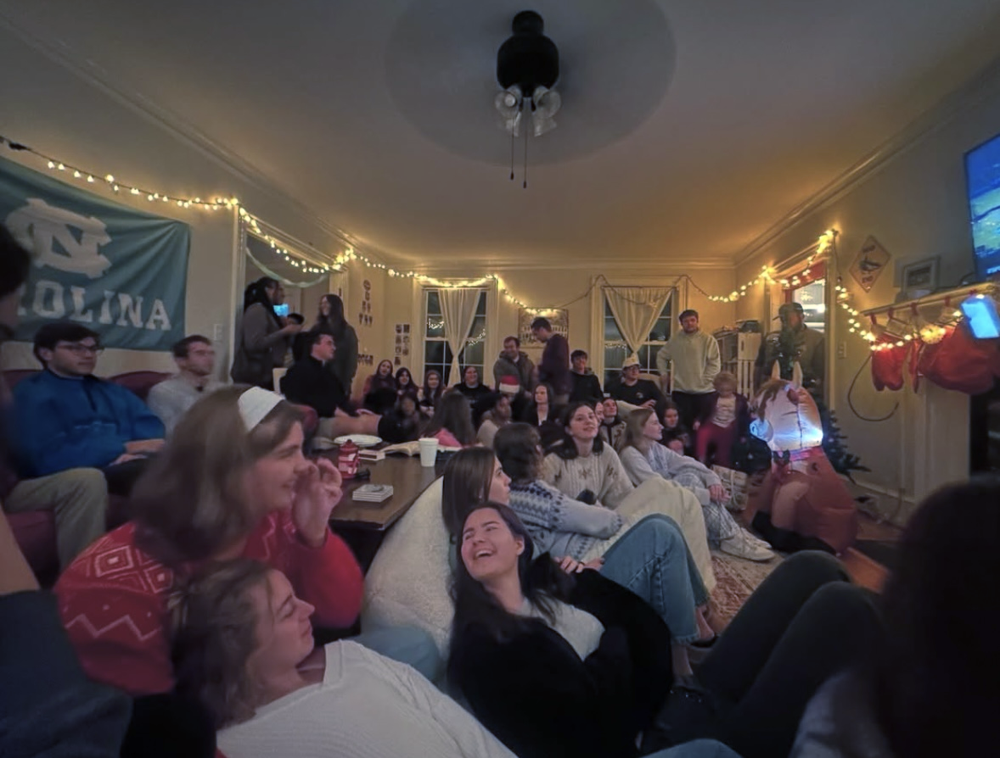

The What
Large Group is chapter-wide gathering where we come together to play games, fellowship, worship, and hear the Word from our campus staff. We also have monthly community nights in place of Large Group, where we host fun events such as trivia nights, movie nights, watch parties, game nights and more.

The Why
While Small Groups are at the core of InterVarsity, we also believe it is important to meet regularly as a chapter for fun and fellowship. Large Group is a great way to get connected with the rest of the chapter and see how God is moving at UNC through InterVarsity.

The When
Large Group meets weekly on Fridays at 7pm, but there are often pre and post Large Group hangouts. Keep an eye on our GroupMe or Instagram (linked below) for more information and locations!